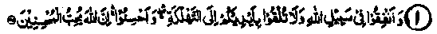
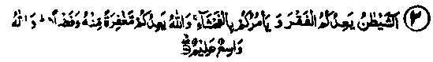
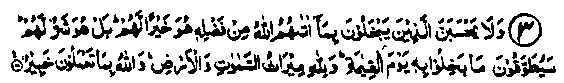

Chapter Two
On Condemnation of Miserliness
The Ayaat of the Qur’an and the Ahadith of Rasulullah Sallallaho alaihe wasallam, given in Chapter I, have made it abundantly clear that there are great and enormous virtuous gains and profits in spending in the path of Allah Ta'ala. Any deficiency in this will bring a corresponding heavy loss which, by itself, is deplorable. However, Allah Ta'ala and Rasulullah Sallallaho alaihe wasallam have condemned and given such warnings against miserliness and hoarding that, are in a way, a great favour of Allah Ta'ala on the Ummah of Rasulullah Sallallaho alaihe wasallam, as these have been given with a view to saving them from this deadly disease. Both the Holy Qur’an and the Ahadtih have treated this subject in many different ways: such as persuasions to do virtuous deeds, warnings prohibiting the evil and harmful acts, etc. It is difficult to cover fully any of these aspects. However, as an example, a few Ayaat and Ahadith are given in this Chapter.
Section (a)
Ayaat
Ayaat on warnings against miserliness

1. Spend your wealth for the cause of Allah, and be not cast by your own hands to ruin. (al-Baqarah: 195)
Note: This Ayat has already been mentioned at No. 3 of the Ayaat in Chapter I. This Ayat considers the failure to spend for the cause of Allah Ta'ala as self-ruination and destruction, and has been mentioned in detail by the Sahabah Radhiallaho anhum. Who would want his own ruination and destruction, but how many are there who, after knowing this full well, try to save themselves from this calamity and keep away from hoarding? What can be the conclusion other than thatiour minds being befogged by negligence, we are bent upon causing our own ruin.

2. Shaitan promises you destitution and enjoins upon you lewdness. But Allah promises you forgiveness from Himself with bounty. Allah is All-Embracing, All-Knowing. (al-Baqarah:268)
Note: According to Abdullah Ibne Mas‘ud Radhiallaho anho, Rasulullah Sallallaho alaihe wasallam has said that man is influenced within his mind by Shaitan and also by an angel. Shaitan’s purpose is to frighten him with evil results (like spending will bring poverty) and to falsify the truth, while the angel promises blessings and confirms the truth. Whoever perceives the angel’s advice should think it to be from Allah Ta'ala and be thankful for it; and whoever thinks the opposite, should seek the protection of Allah against Shaitan, as it is he who creates such thoughts in man’s mind; and then Rasulullah Sallallaho alaihe wasallam recited the above Ayat in support of his contentions. The Ayat actually denotes Allah’s direction that Shaitan frightens by this fear of becoming poor and incites us to indulge in obscenities, which in fact is falsifying the truth. Ibne Abbas Radhiallaho anho says that the above Ayat contains two things from Allah Ta'ala and two from Shaitan. Shaitan avows poverty and orders evil; he asks us not to spend anything but to hoard it carefully for later needs. And Allah Ta'ala promises forgiveness of all sins and an abundant increase in provisions.
Imaam Ghazali Rahmatullah alaihe says that one should not get involved in fears for the future but should trust in Allah Ta'ala, Who has promised to provide livelihood; and consider such fears as an evil influence of Shaitan. As has been mentioned in the above Ayat, Shaitan fosters the thought in the human mind that, if you do not hoard wealth, you would land in trouble and difficulties when you fall ill or become unfit to earn or when some other emergency arises. Through these thoughts, he keeps people involved in toil and hardships all their lives and later makes fun of them that the men, through imaginary future fears, are caught in real hardships at present in the form of constant anxiety to save for the fearful thought of an unknown future!

3. And let not those who hoard up wealth that Allah has bestowed upon them of His bounty think that it is better for them. No, it is worse for them. That which they hoard will be made a collar (in the form of a snake and put round their necks)on the Day of Resurrection. Allah’s is the heritage of the heaven and the earth, and Allah is Informed of what you do-(Aal-e-Imran: 180)
Note: According to Bukhari, Rasulullah Sallallaho alaihe wasallam has said that, if a man has been given wealth by Allah Ta'ala, but fails to pay Zakaat on it, that wealth will,on the Day ol Judgement,be turned into a bald-headed snake (extremely poisonous) with two spots under its mouth (a sign of deadly poison) and will be put round his neck. .
The snake will grab both his jaws and say, "I am your hoarded wealth and the protected treasure". Then Rasulullah Sallallaho alaihe wasallam recited the above Ayat. This Hadith wilFbe repeated in Chapter 5 under Ahadith at No.2. Hasan Basri Rahmatullah alaihe has said that the above Ayat was revealed about the Kaafirs and about those Muslims who are miserly and do not spend in the path of Allah Ta'ala. Ikrimah Radhiallaho anho has said that, when someone fails to fulfil the demands of Allah Ta'ala from his property, that property will become a bald-headed snake and chase the person who will be begging for protection from it.
Hajar Bin Bayan Radhiallaho anho has quoted Rasulullah Sallallaho alaihe wasallam to say that when a close blood relation approaches a relative for help from his spare wealth and the lattei refuses it, due to miserliness, that wealth will become a snake to be worn by the owner of the wealth round his neck. Rasulullal Sallallaho alaihe wasallam then recited the above Ayat. Manj Sahabah Radhiallaho anhum have also repeated this subject Masrooq Rahmatullah alaihe says that the above Ayat refers to e person whom Allah Ta'ala has given wealth but who fails to fulfil his obligations to his relatives: that property will be turned into a snake which he will be made to wear round his neck. He will ask the snake, “Why are you persecuting me’? The snake will reply,“I an your property’'. (Durre Manthur)
Imaam Razi Rahmatullah alaihe writes in his Tafseer ‘Kabeer’ that the preceding Ayaat exhort us to participate in Jehaad personally. This Ayat contains exhortation to spend money in the path of Allah and warns those Who do not spend for the cause of Allah .that their wealth will become a bald snake, which would be hung round their necks. After a detailed discussion of the topic, the Imaam Rahmatullah alaihe says, ‘This Ayat does not apply to the cases of Supererogatory spending (Nafl Sadaqaat). It applies to cases of failure in obligatory spending, which' falls in several categories: first, spending on oneself and the dependents in the household; second, paying Zakaat and the third, spending money at the time when the Muslims are invaded by non-Mulims to destroy their life and property: the rich must give to the defenders as much as needed, which will in fact mean protection of their own life and property; fourth,to help a person in distress till he is out of danger. All these payments are obligatory.
4. Lo! Allah loves not such as are proud and boastful, who hoard their wealth and enjoin avarice to others, and hide that which Allah has bestowed upon them of His bounty. For disbelievers We prepare a shameful doom. (An-Nisaa: 36-37)
Note: Teaching miserliness may be by verbal encouragement or by setting a personal example for others; this subject has been treated in many Ahadith to tire effect that whoever adopts a wrong course suffers for his own sins as well as of those who follow his example; there will be no reduction in the punishment to the followers for their own sin. This subject has already been discussed earlier in detail. In the explanation of "Mukhtaalan-Fakhoora", Mujahid Rahmatullah alaihe 'has been quoted to have said that anyone who keeps counting the things gifted to him by Allah Ta'ala, and does not offer thanks to Him, is a proud person. Abu Saeed Khudri Radhiallaho anho has quoted Rasulullah Sallallaho alaihe wasallam as saying that, on the Day of Judgement when Allah Ta'ala wiJ collect His entire creation in one place, the fire of Jahannam will advance furiously, flames over flames, towards the people and the angels appointed on it would like to halt it, but it will say, "1 swear by my Lord, let me get hold of my companions or else I will swallow all of these people". The angels will ask who are they? It will reply, "Every proud person and tyrant". After that, it will pick up with its tongue, one by one, every cruel and arrogant person and devour him, like an animal eating grass. It will withdraw after that, but return soon after, with the same fury and demand the conceited and the persons thankless to Allah Ta'ala, picking them up one by one and swallowing them. In the third turn, it will come and deal with all those who were arrogant and strutted proudly in life. Thereafter the reckoning of the remaining people will commence.
Jaabir bin Sulaim. (Hujaimi) Radhiallaho anho says that once, he came to visit Rasulallah Sallallaho alaihe wasallam and met him in a street of Madinah. He asked him about the wearing of the ‘Izaar’ (lower garment), to which he replied, "It should be worn halfway down to the calf, but if you dislike that you may wear it a little lower, and if you do not like it even that high, you can wear it still lower, till it comes down to a point just above your ankles. If even that is not to your liking, there is no further scope, as Allah does not like those who are proud and boastful (and trailing of lower garment or wearing it lower than the ankles is a sign of pride)’ He then asked about the acts of kindness and Rasulullah Sallallaho alaihe wasallam replied, “Do not consider any act of kindness too small or insignificant, nor delay it, be it a piece of string or a shoe-lace (that you give to someone), or a bucket of water (that you fill for someone) or to remove a harmful object from the road er to speak to someone with a smile or pay Salaam to a wayfarer, or to show affection to a person in distress; all are good acts of beneficence. If someone talks about a vice which you may have, you should suppress his vice that you may know of .; the concealment of his vice will bring you reward and its disclosure will be a sin. When you intend to do something, and you will not regret its becoming known to people, go ahead and do it. And if there be something you wish to do but are afraid of people knowing it, do not do it (as that is the sign of its being a vice)".
Abdullah Bin Abbas Radhiallah anho says that Kardam Ibne Yazid and others used to come to the Ansaar and advise them not to spend too much, as they feared that all their possessions might get exhausted and they might become destitute. They advised them to keep back something for meeting any unforeseen eventuality. The above Ayat was revealed as condemenation of such persons. (Durre Manthur)